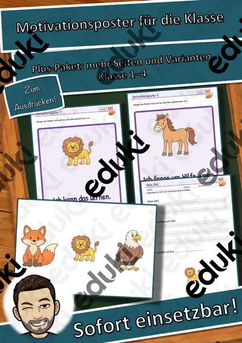
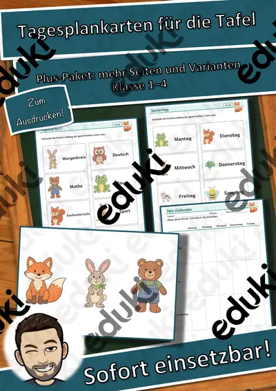
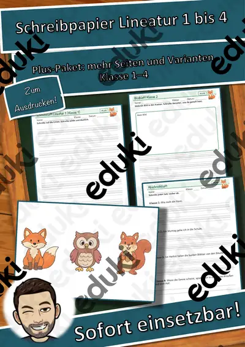
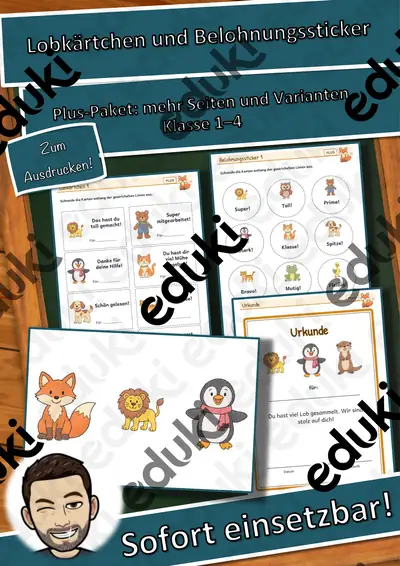
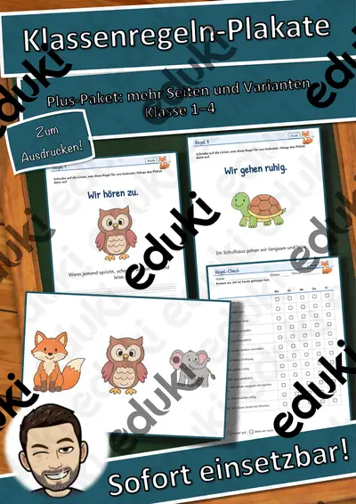
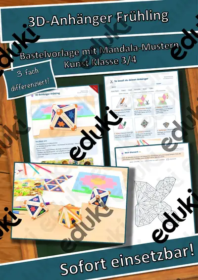
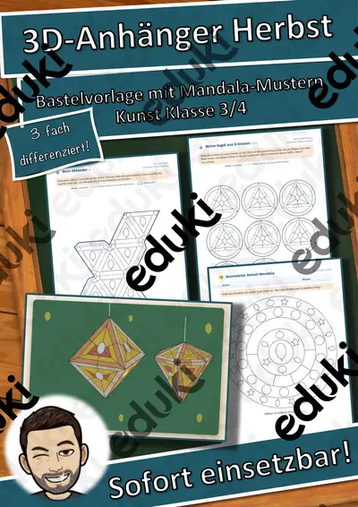
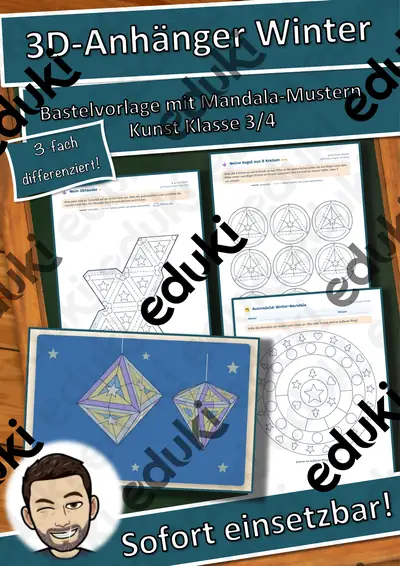
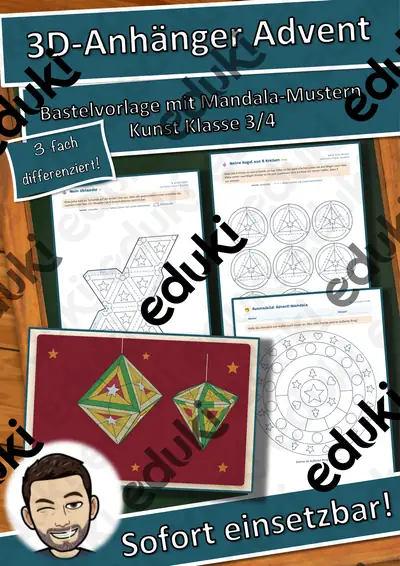

Basteln, Falten und Werken: Arbeitsblätter für Klasse 1–6 (Kunst)
Basteln und Werken schulen Feinmotorik, Planung und Geduld. Papier, Karton, Salzteig und Naturmaterialien sind die Werkstoffe der Grundschule, oft mit saisonalem Bezug.
Zum Themenkern zählen Falten, Schneiden und Kleben. Als Vertiefung bieten sich Girlande und Origami an, am Ende steht oft Salzteig.
Wo genau im Lehrplan das Thema steht, unterscheidet sich von Land zu Land, häufig im Fach Kunst in den Klassen 1 bis 6. Gemeinsames Ziel: die Kinder folgen einer Bauanleitung und fertigen ein Werkstück an.
Im Alltag einer Lehrkraft zählt, dass Material sofort einsatzbereit ist: Die Blätter zu Basteln, Falten und Werken greifen Schneiden, Kleben und Girlande auf, lassen sich ausdrucken und kommen mit Lösungen, damit die Vorbereitung kurz bleibt. Zur Differenzierung eignen sich die Lesespurgeschichten mit ihren drei Niveaustufen.
Die Auswahl zum Thema umfasst derzeit 95 Titel, zum Beispiel Wimmel-Werkstatt Tiere im Winter Materialpaket, Jahreszeiten-Werkstatt: Ostern: Ausmalbilder und Domino-Werkstatt: Domino Einmaleins mit. Dazu zählen 4 Lesespurgeschichten, 4 Rechenwelten, 11 Bastelvorlagen und 1 Lückentext mit Hörverstehen für Klasse 1–7. Eine Probe-Vorlage vorab selbst gebastelt zeigt Stolpersteine und spart Zeit.
Das gehört zum Thema
Passende Arbeitsblätter und Materialpakete

Wimmel-Werkstatt Tiere im Winter Materialpaket: 3 Einheiten – Sprachförderung und Sachwissen mit Wimmelbildern (Grundsch

Jahreszeiten-Werkstatt: Ostern: Ausmalbilder mit Wörtern – Plus-Paket, Klasse 1–4

Domino-Werkstatt: Domino Einmaleins mit Darstellungen – Plus-Paket, Klasse 2–4

Domino-Werkstatt: Zahlen-Domino bis 100 – Plus-Paket, Klasse 1–2

Klassen-Werkstatt: Motivationsposter für die Klasse – Plus-Paket, Klasse 1–4

Klassen-Werkstatt: Geburtstagskalender mit Urkunde und Krone – Plus-Paket, Klasse 1–4

Klassen-Werkstatt: Tagesplankarten für die Tafel – Plus-Paket, Klasse 1–4

Klassen-Werkstatt: Schreibpapier Lineatur 1 bis 4 – Plus-Paket, Klasse 1–4

Klassen-Werkstatt: Lobkärtchen und Belohnungssticker – Plus-Paket, Klasse 1–4

Klassen-Werkstatt: Klassenregeln-Plakate – Plus-Paket, Klasse 1–4

DaZ & Leseförderung Materialpaket: Partner-Werkstatt – Partnerdiktat, Hör-Mal-Bilder, Lese-Fitness-Pass (3 Niveaus, QR-Audio)

Masken-Werkstatt Materialpaket: 3 Hefte – Geometrische Gesichter in 3 Stufen (Kunst, Klasse 1–4, Vorlagen + Bausteine)

Lern-Girlande Materialpaket: 3 Themenhefte – Ausmal-Anhänger mit Lernauftrag in 3 Stufen (Vorschule, Klasse 1–2, DaZ)

Flache Werkstücke - Sparpaket (auch Homeschooling)

Materialpaket Werkstücke

3D-Anhänger Schulanfang – Oktaeder, Diamant und Kugel zum Ausmalen und Basteln, 3-fach differenziert (Klasse 3/4)

3D-Anhänger Sommer – Oktaeder, Diamant und Kugel zum Ausmalen und Basteln, 3-fach differenziert (Klasse 3/4)

3D-Anhänger Ostern – Oktaeder, Diamant und Kugel zum Ausmalen und Basteln, 3-fach differenziert (Klasse 3/4)

3D-Anhänger Fasching – Oktaeder, Diamant und Kugel zum Ausmalen und Basteln, 3-fach differenziert (Klasse 3/4)

3D-Anhänger Frühling – Oktaeder, Diamant und Kugel zum Ausmalen und Basteln, 3-fach differenziert (Klasse 3/4)

3D-Anhänger Herzen und Muttertag – Oktaeder, Diamant und Kugel zum Ausmalen und Basteln, 3-fach differenziert (Klasse 3/4)

3D-Anhänger Herbst – Oktaeder, Diamant und Kugel zum Ausmalen und Basteln, 3-fach differenziert (Klasse 3/4)

3D-Anhänger Winter – Oktaeder, Diamant und Kugel zum Ausmalen und Basteln, 3-fach differenziert (Klasse 3/4)

3D-Anhänger Advent – Oktaeder, Diamant und Kugel zum Ausmalen und Basteln, 3-fach differenziert (Klasse 3/4)
Weitere 71 Materialien zum Thema im Material-Finder.
Häufige Fragen
Für welche Klassenstufe passen die Arbeitsblätter zu Basteln, Falten und Werken?
Die 95 Materialien zu diesem Thema sind für Klasse 1–7 ausgelegt, die meisten davon für Klasse 2. Einzelne Titel lassen sich mit Anpassung auch eine Stufe darunter oder darüber einsetzen.
Welche Inhalte decken die Materialien zu Basteln, Falten und Werken ab?
Behandelt werden unter anderem Falten, Schneiden, Kleben und Girlande. Welche Aspekte in Ihrer Klasse Vorrang haben, richtet sich nach dem Lehrplan Ihres Bundeslandes.
Wie setze ich Basteln, Falten und Werken im Unterricht ein?
Eine Probe-Vorlage vorab selbst gebastelt zeigt Stolpersteine und spart Zeit. Danach genügt meist ein Material als Einstieg und eines zum Üben.
Mehr Material nach Fach und Klasse
- Alle Materialien Deutsch
- Arbeitsblätter Deutsch Klasse 1
- Arbeitsblätter Deutsch Klasse 2
- Arbeitsblätter Deutsch Klasse 3
- Arbeitsblätter Deutsch Klasse 4
- Arbeitsblätter Deutsch Klasse 5
- Arbeitsblätter Deutsch Klasse 6
- Unterrichtsmaterial Klasse 1
- Unterrichtsmaterial Klasse 2
- Unterrichtsmaterial Klasse 3
- Unterrichtsmaterial Klasse 4
- Unterrichtsmaterial Klasse 5
- Unterrichtsmaterial Klasse 6
Verwandte Lehrplanthemen
- Malen, Zeichnen und Drucken (Kunst, Klasse 1–6)
- Jahreszeiten (Sachunterricht, Klasse 1–4)
- Haustiere (Sachunterricht, Klasse 1–4)
- Karneval und Fasching (Sachunterricht, Klasse 1–6)
- Schulanfang und Klassengemeinschaft (Sachunterricht, Klasse 1–4)